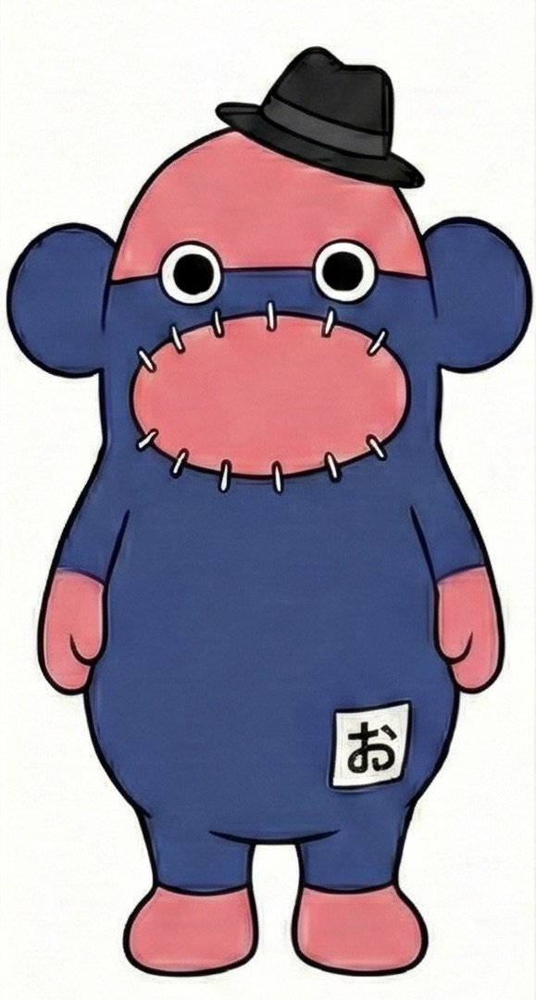

RL
起案者ロゴTシャツ
起案者のロゴや活動名を主役にした基本グッズ。初期応援者が身につけて広げやすい設計です。

防災×帽祭Revo Goods
ここは応援者募集ではなく、起案者と応援者が決めた商品を支援者が購入するページです。 購入後は活動レポート、SNS共有、次回ロット案内へつながり、認知と資金の循環を支えます。
Brand Story
ファン化を加速させるのは、ロゴやキャラクターをただ印刷することではありません。 「なぜこの挑戦をしているのか」「誰のための活動なのか」「買うことで何が次に進むのか」が商品ページで伝わることです。
レボファンディングでは、応援者募集で整理した起案者のロゴ、活動写真、キーワード、応援メッセージをもとに、 Tシャツ、帽子、ステッカー、トートバッグなどへ展開できるように設計します。
Merch Design System
起案者のロゴや活動名を主役にした基本グッズ。初期応援者が身につけて広げやすい設計です。
防災を楽しく伝える帽子やイベントグッズ。街中やイベントで視認されやすい商品です。
日常利用しやすく、ファンが自然に活動を広げられるグッズとして展開します。
購入後のファン登録、SNSシェア、次回ロット通知へつなげる小さな導線です。
Certified Artists
起案者のロゴや活動背景を、実際に愛されるTシャツやグッズへ整えるために、 レボファンディングでは認定アーティスト制度を用意します。 認定アーティストは社会貢献として参加し、自分の表現がファンに着られ、広がり、愛される体験を得られます。
Onokun License Plus
審査を通過したレボチャレンジでは、当社が管理するおのくんの使用ライセンスを活用できます。 起案者のロゴや活動イメージに、おのくんの持ち寄り文化を重ねることで、商品単価、認知、ファン化の入口を強化します。
Why Buy
防災×帽祭の応援Tシャツを購入し、挑戦を身近に持ち歩けます。
購入後に次回ロット、活動報告、二次募集案内を受け取れます。
SNSシェア素材や紹介リンクで、挑戦を友人や地域へ共有できます。
売上は制作費・運営費・次回展開ストックを経て、起案者支援につながります。
SEO / Discovery
防災、Tシャツ、応援グッズ、おのくん、帽祭、クラウドファンディング、地域応援などを自然に本文へ配置します。
SNSで表示される画像に、商品写真、企画名、残り枚数、応援者数を入れるとクリックされやすくなります。
商品名、価格、在庫、ブランド、説明文を構造化して、検索エンジンに商品ページとして理解させます。
制作進捗、在庫、二次募集、ファン数の更新を記事化し、ページの鮮度と検索入口を増やします。
Design
Stock
After Purchase
案内はサイト更新、メール、SNSを中心に行います。LINE公式の一斉送信は初期運用では主軸にしません。